Josh Thies • Zachary Baker • Ian Driscoll
Programming & Game Design
Auto-Nautilus began as Cephalopioneers, but even before that, my original idea for the game was a bit more grotesque. I imagined the main character as some amorphous, tentacle-y, alien, ocean organism that could puppet machinery, with movement animations reminiscent of the game CARRION: Sticking to walls with alien-like tentacles, propelling itself along the ground or ceiling. However, my pixel art style does not mesh well with that horror concept, so the game pivoted to a more cutesy idea, with a cute squid-like player character named Nauto. His core ability, to “possess” machinery, did persist in a way, with Nauto able to enter a mech suit that transforms his traversal style and general gameplay modality. This ability was the cornerstone of the game design, catering toward the ability to switch between these two forms in designing the levels and obstacles (i.e. most enemies can only be dealt with in mech form, but Nauto is much faster and can jump much higher outside his mech).
The very beginning of the Shallows with the Needlenose, the first enemy designed

The high speed escape from the Leviathan Eel, requiring well-timed use of the charge jump
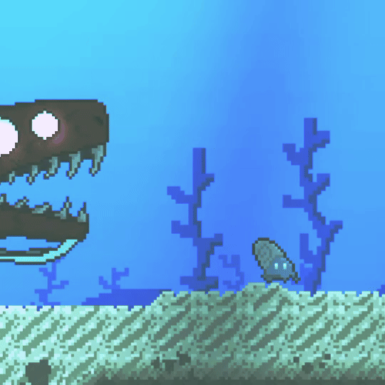
Once the main character and the key gameplay gimmick was solidified, we decided on the genre of the game. Namely, we wanted exploration and movement to be central mechanics, with de-emphasized combat—essentially a platformer. This was due to a couple reasons. One: a platformer seemed to make the best use of the gimmick of form switching between controlling the mech and Nauto, and opened up the level design so we could more easily craft this alien underwater setting. Two: I wasn’t confident in my ability to create a fun and engaging combat system, primarily due to my inexperience in creating those mechanics with proper tuning and the associated animation work, so I didn’t want to focus on it. We also had intentions for a more Metroidvania style of exploration, but this diminished as the scope of the project decreased.
Programming the game was a great learning experience for me. Auto-Nautilus involved more systems and more complexity than any previous game I've developed, and so required a lot of experimentation with GDScript and the Godot engine. The initial challenge was mainly focused on movement and traversal mechanics, as well as the unique mechanic of switching between in-mech and out-of-mech gameplay. This meant I had to program and tune two different movement systems, as well as design differences in how the environment and level interacted with the player based on what form they were in. I experimented with movement speeds, making Nauto much faster and more reactive, and the mech a bit clunkier (but not too clunky as to be irritating to handle). I wanted the mech and out-of-mech gameplay to feel. This balance was something I returned to many times throughout development, especially as we developed new obstacles and platforming that challenged the existing movement.
A puzzle in the Whalefall Zone requiring in and out of mech gameplay
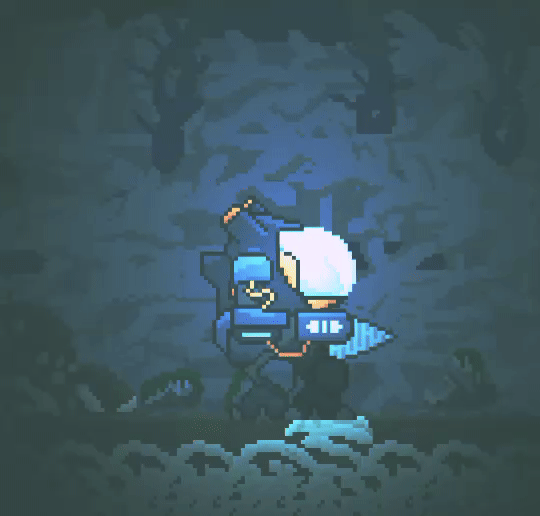
The climatic and challenging boss fight against the Spider-Crab King

Ultimately the largest challenge I had with programming was state management. This is a game coding concept I had some experience with, but with the addition of cutscenes, set pieces, dialogue, more complex enemy AI, and the final boss fight, I had to learn how to create a robust state machine that would enable these more complex parts. My ability to manage states progressed throughout the game's development, and involved learning many powerful Godot features like signaling, timeouts, and enums.
The chase set-piece and boss fight at the end of the game are good examples of the progress I made in learning this fundamental game programming concept, and both were incredibly intimidating when I was figuring out how I would code them. The set piece where the Leviathan Eel chases you had to transition between dialogue, cutscene, and gameplay fluidly, whilst the boss fight against the King Spider-Crab had many semi-randomized movesets and phases with complicated animation and sound effects syncing. Along with being programming challenges, each of these scenes presented strong game design challenges. The Leviathan's speed had to be balance with the difficulty of the platforming the player had to navigate through while under pressure, and was something I came back to repeatedly. The boss fight had to be fun but not too challenging, use all of the tools at the player's disposal as the ultimate challenge of the game, and had to accomodate the clunkier movement/dodging capability of the mech (designing the boss fight resulted in increasing the mech's speed for the whole game, which was ultimately a great decision). With all the design work and complex programming that went into the creation of these two scenes, they have become my proudest parts of the game to and demonstrate the amount of progress I made in this project from beginning to end.
Sprite Art
Becoming more competent with pixel art and animation was a big goal for me in this project, and I'm very proud of the work I created as someone who lacks experience in art.
Iteration was the key method of creating the final work featured in the game, and I returned to many sprites I created earlier on later in the project after I had established
a more unique and high quality style and generally learned how to make more appealing designs. This was especially the case with the more complex sprites that had multiple concurrent
animations, like the mech and the crab boss at the end. I also decided to add lighting in engine which really enhanced the look of my sprites and the atmosphere of the game. Overall
I'm very happy with the improvements I made in my pixel art illustration and animation capabilities, and I think I cultivated a unique artistic style during the development process
that helped to contribute to the game's unique visual identity.
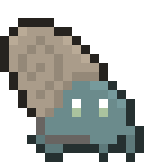
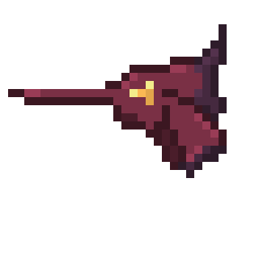
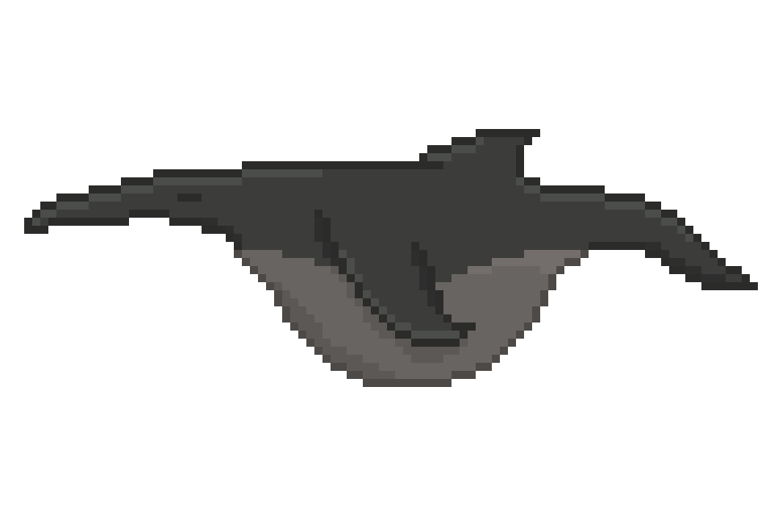
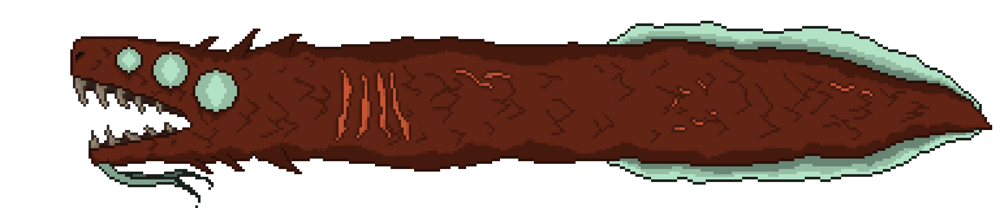
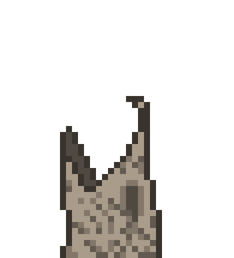
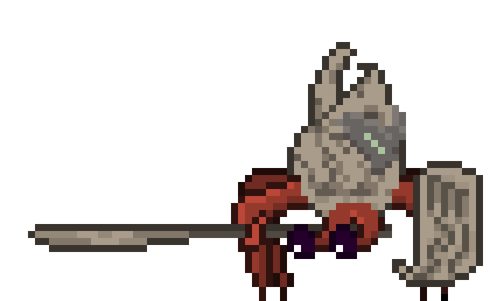
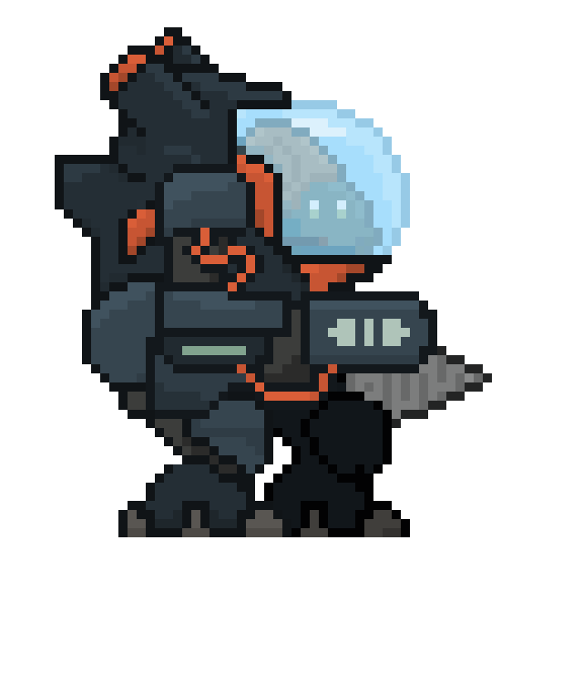
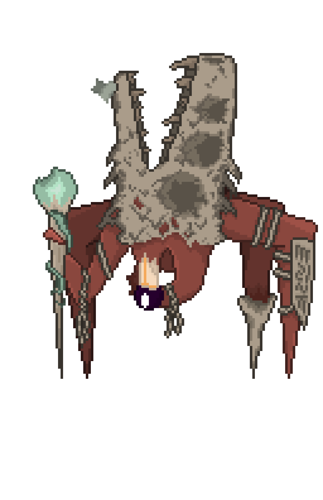
Environment Art
Working on Auto Nautilus has been my first true look into what game design really consists of. Starting with little to no knowledge of pixel art and environmental design I went from
barely knowing how to use programs like Aseprite and Godot to creating an entire underwater world over the span of this project.
From some of my earliest drafts:
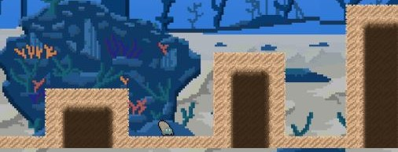
To some of my final additions:
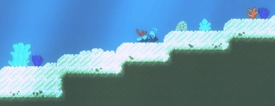
I grew as a game developer and an environmental artist. At first glance pixel art looks incredibly simple. It’s just low resolution images designed to mimic objects we are familiar with.
However, that is where the struggle and the artform of pixel art really shows. Working with single pixels and a limited canvas to create good looking representations of objects and characters can be a true challenge.
My process for designing the environmental art of this game went something like this:
1. Find real life reference images of what I am trying to create.
2. Create a rough outline of the shape with pixels in Aseprite, taking creative liberties for the angles of the object I was creating and the style I wanted it to be in.
3. Create a color palette that matches the other pre-existing colors in the game. Oftentimes colors would be reused for different objects to keep everything looking cohesive.
4. Begin adding details. I would usually start with lighting and shadows to add an immediate layer of depth to the pixel art.
5. If the object was interactable, an almost black outline would be added around it to highlight it and make it pop out from the background. By deliberately using outlines on some objects and not using them on others, players can easily distinguish what is what.
6. If I was creating tiles for the ground, walls, etc… I would have to make sure that they flowed seamlessly into the next tile they would be touching. This meant lots of reiterating and redrawing tiles to remove any weird visuals.
7. Place the pixel art created in Aseprite into Godot where I would then either animate it with a spritesheet and an animation player or, create a Sprite in Godot with the pixel art image attached if it was a still image.
8. Test in various lighting and placements in the game and make changes as necessary.
Music
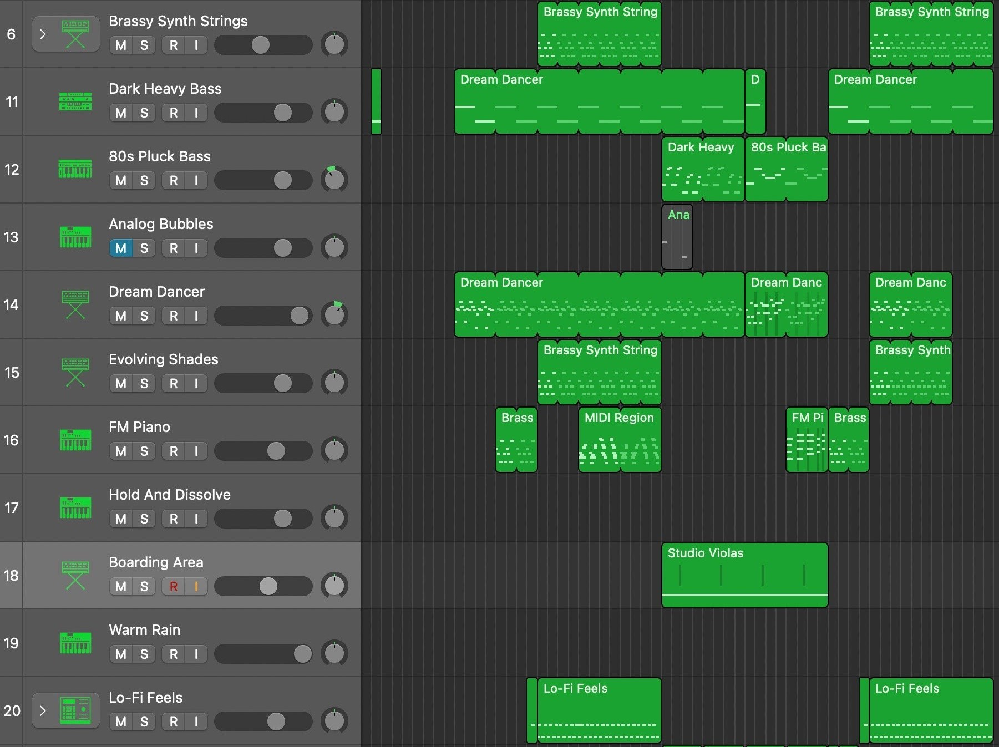
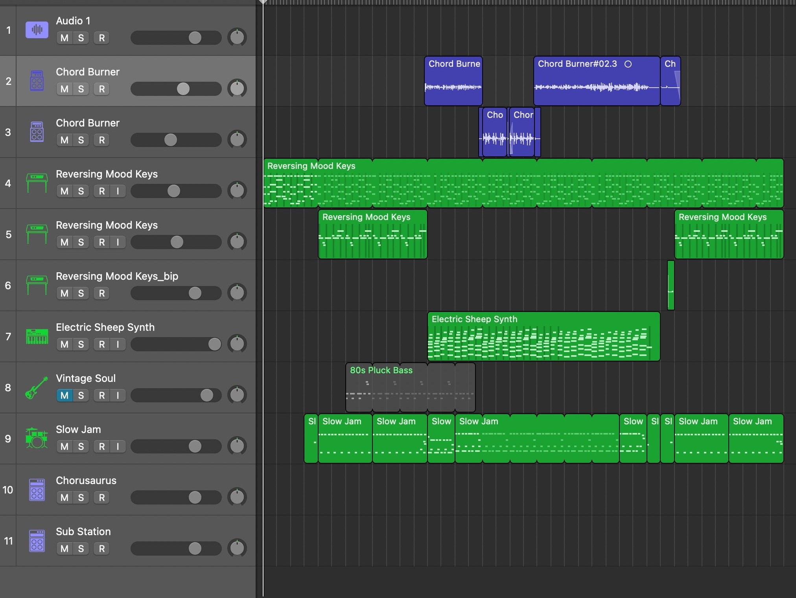
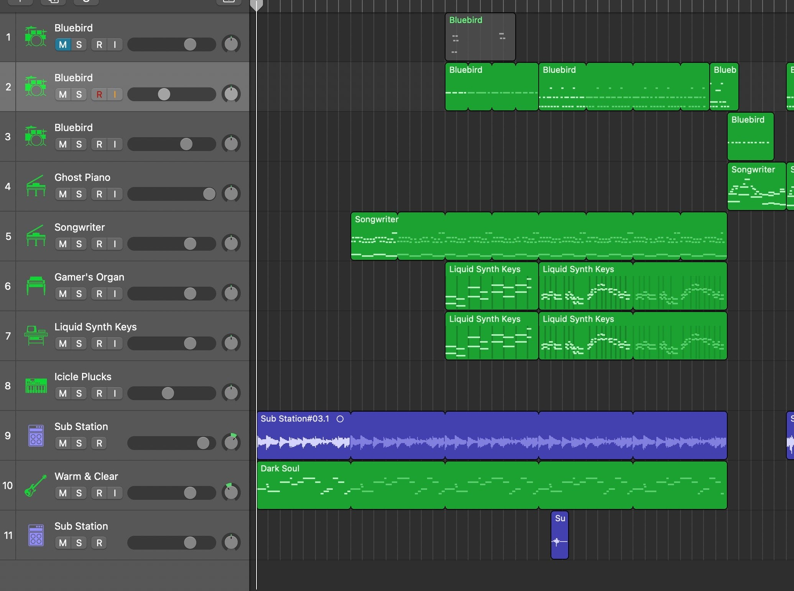
Making the soundtrack for Auto-Nautilus was an adventure in itself. I, along Zachery Mund, a good friend of mine, created the music for the game
using Logic Pro. Each track was designed to fit the environment it was made for, while keeping a similar, underwater theme. We would start with a musical idea,
either a lick or a chord progression, and build it out one instrument at a time until it felt complete. My specialities include keyboard and synths, Zach's are
guitar and bass, and we juggled percussion between the two of us. Every track is fully original, with each part being recorded by one of us either directly into
the program or using a MIDI keyboard. Using some of our own mixing and mastering skills and a little help from Danny Rankin, we were able to create a soundtrack
that we are very proud of.
Sound Effects
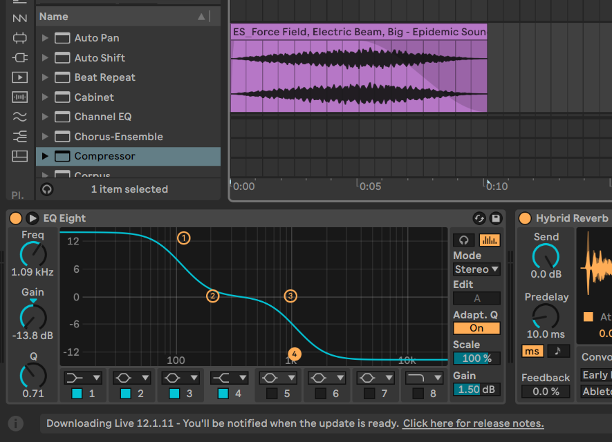
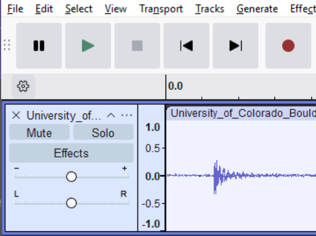
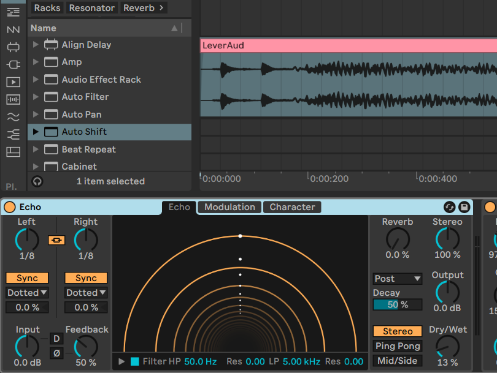
The Sound Effects for Auto-Nautilus were created using a combination of Audacity and Ableton. I recorded some of the sounds with a microphone, while others were
taken off royalty-free sound effect websites. After recording or finding an initial sound, I would modify it in Ableton to fit the visual from the game. This included
EQing, most of the time to filter out the high end to keep the underwater vibe; reverb, if the sound was too harsh; pitch shifting, compression, and more. Auto-Nautilus
features over 20 unique sound effects, all of which were carefully constructed to fit the game.
Dialogue
The dialogue and "voice acting" was another fun sanity preserver. I wanted a Hollow Knight esque fake language along with silly performances that gave the characters some personality,
and I think it adds some charm to the game. It was also very interesting to work on character voice post-production in Ableton, as I'd never really worked on voice compared to musical compositions.
I did the voices for Malo and Bite, and my friend Cosmo Mitchell did the much better voice for the Spider-Crab King.